Rilievo con laser scanner e restituzione BIM ad alto LOD di un hotel a Capri
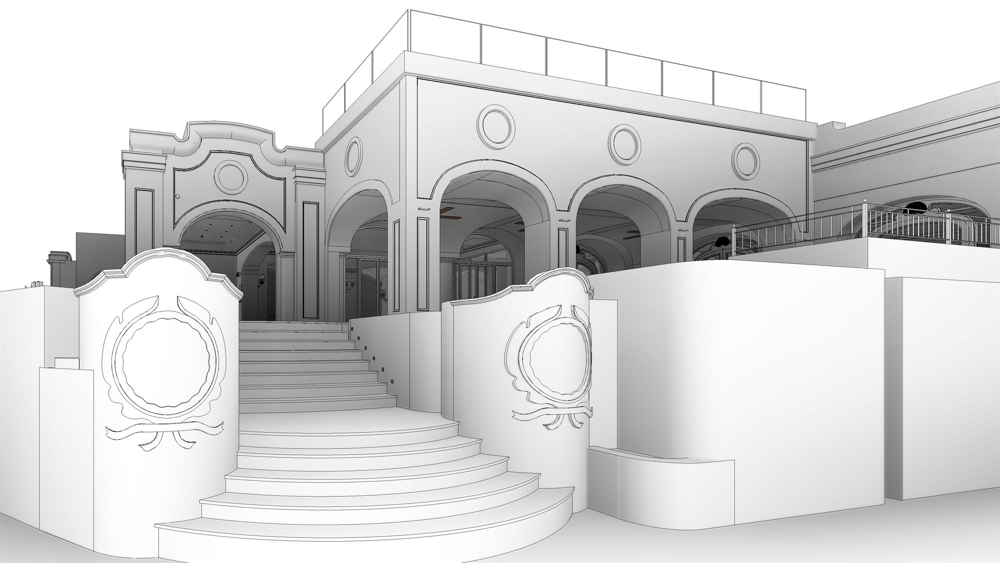
BIMAll'Hotel La Palma di Capri il lavoro è consistito in un sopralluogo in loco per eseguire il rilievo con laser scanner e restituire un modello BIM ad alto LOD. La commessa nasceva da tre esigenze del cliente: disporre di un modello di qualità sufficiente per ricavarne visualizzazioni realistiche, progettare un nuovo intervento all'interno della struttura e catalogare gli impianti esistenti, da quello meccanico a quello elettrico. Il rendering era un obiettivo della committenza: il nostro compito è stato consegnare il modello che lo rendesse possibile.
Il lavoro è partito dal rilievo dell'esterno a piano terra e degli ambienti interni indicati dal cliente. Il risultato è una nuvola di punti affiancata alle bubble view, le panoramiche navigabili che permettono ai progettisti di visitare virtualmente gli spazi anche da remoto, senza dover tornare sul posto a ogni verifica.
Validata la nuvola con ulteriori misure prese in loco, si è passati alla restituzione del modello, seguendo fedelmente il rilievo e riportando la totalità degli elementi: dal disegno delle pavimentazioni al tracciato degli impianti, fino a quei componenti che richiedevano una modellazione più attenta e accurata — volte, applique e lampadari — ricostruiti uno per uno. Attenzione particolare è andata alla parte esterna, oggetto di riprogettazione per dotare l'hotel di un nuovo spazio outdoor.
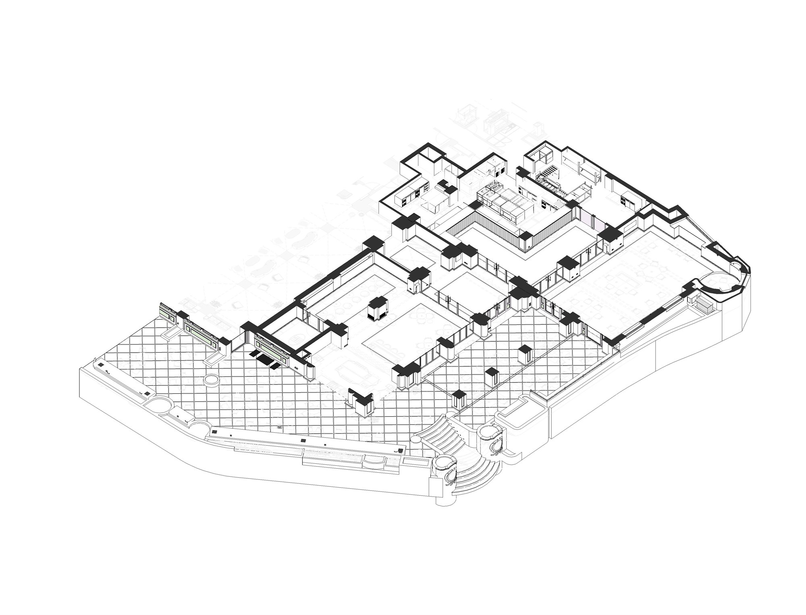
Ogni ambiente restituito nel modello BIM, affiancato alla fotografia dello stato di fatto rilevato in loco: la stessa scena a confronto, dal disegno a modello alla realtà del cantiere.
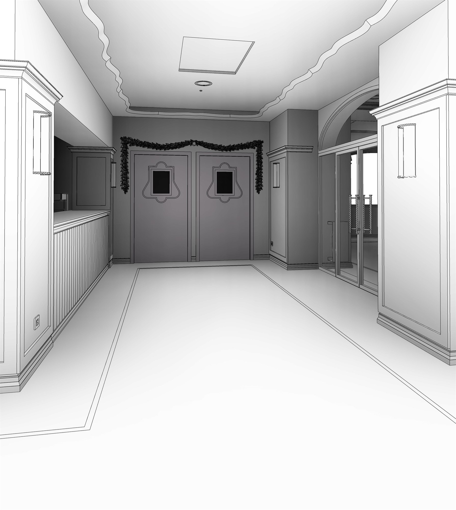
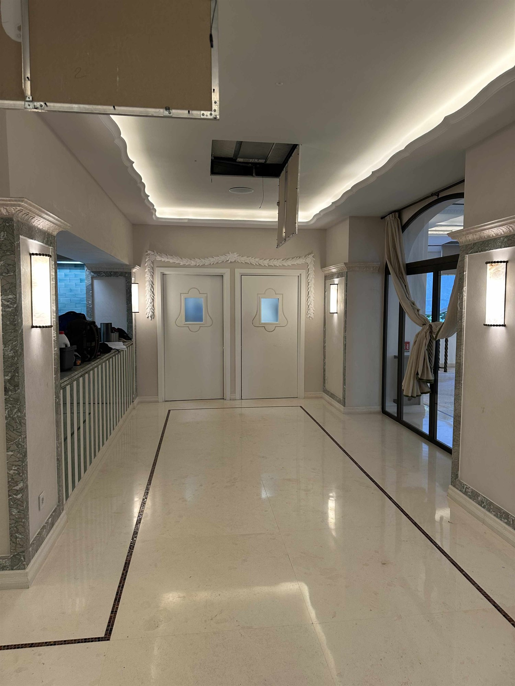
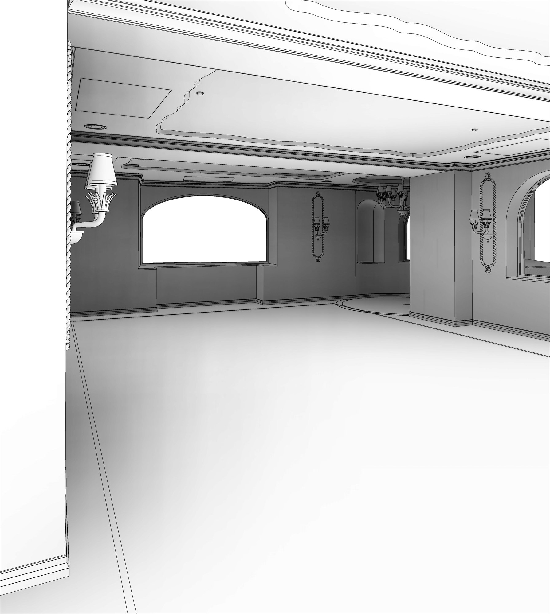
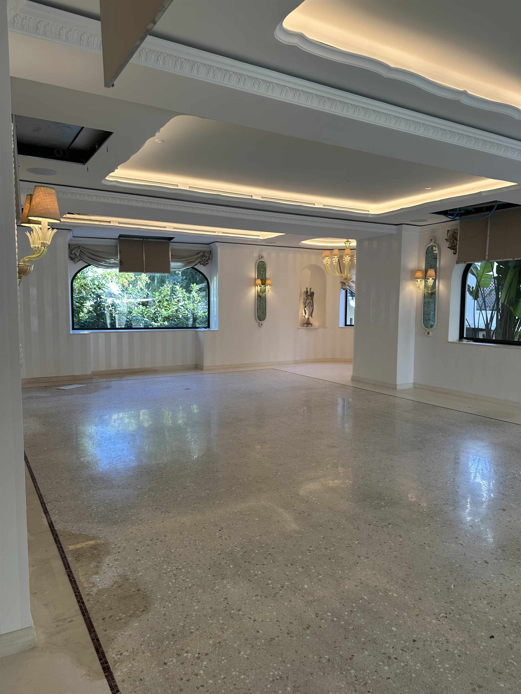
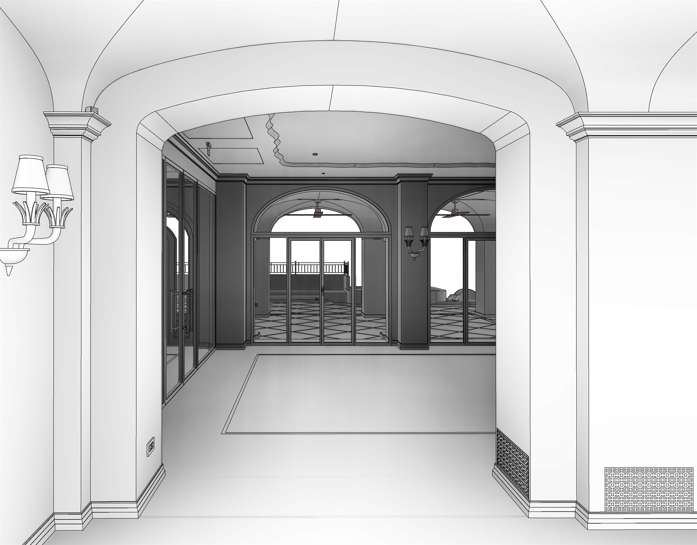
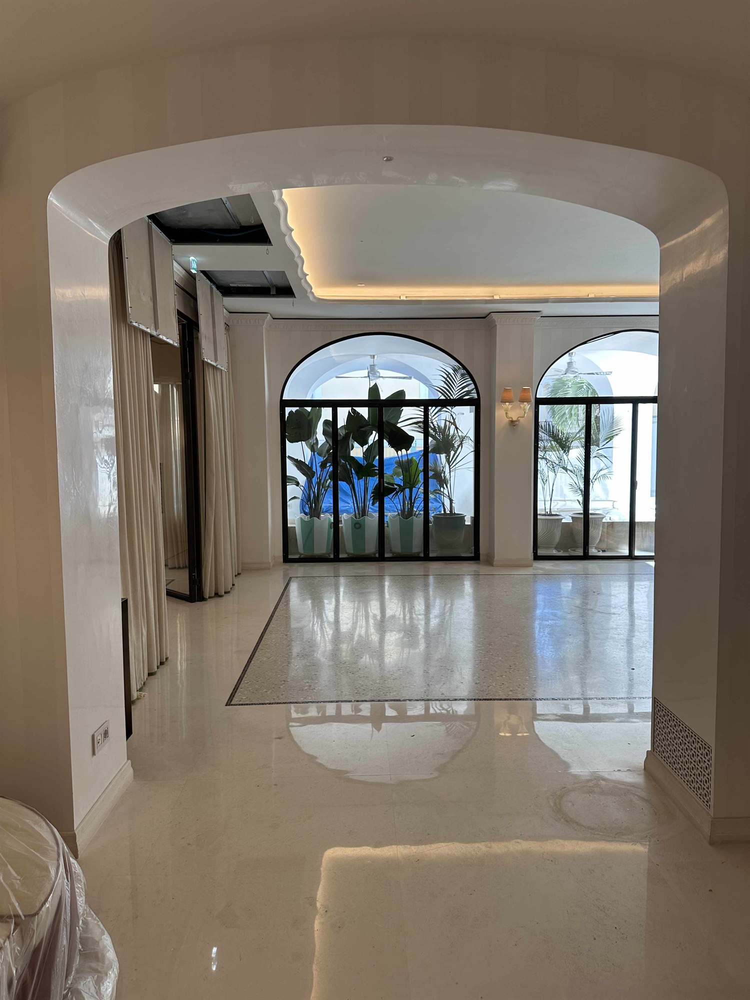
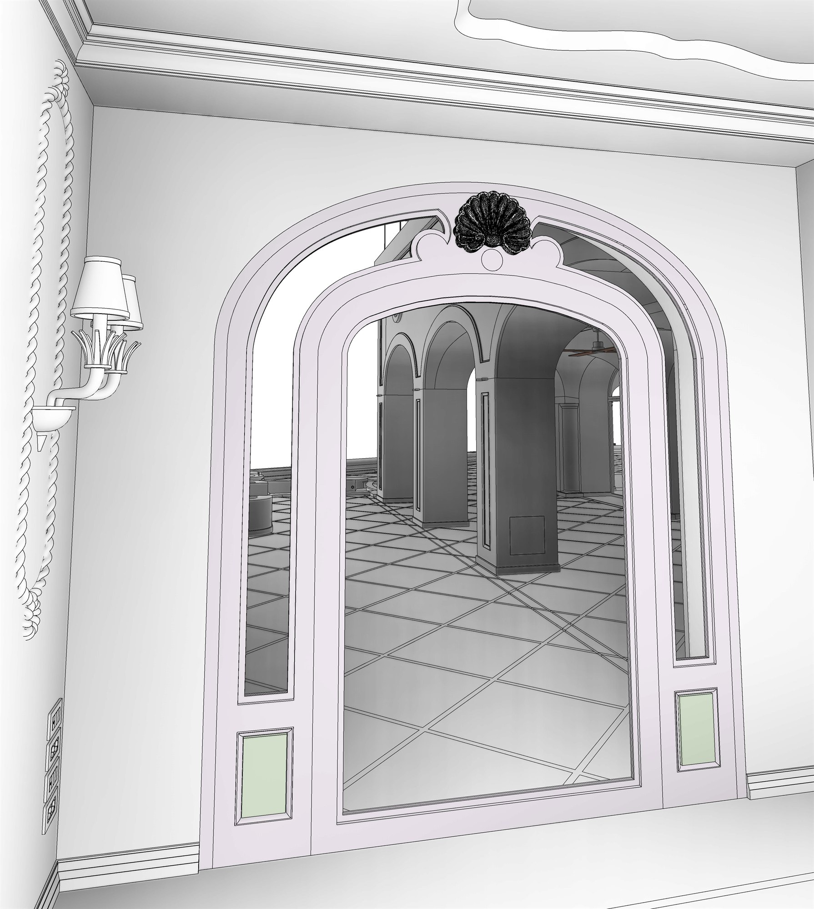
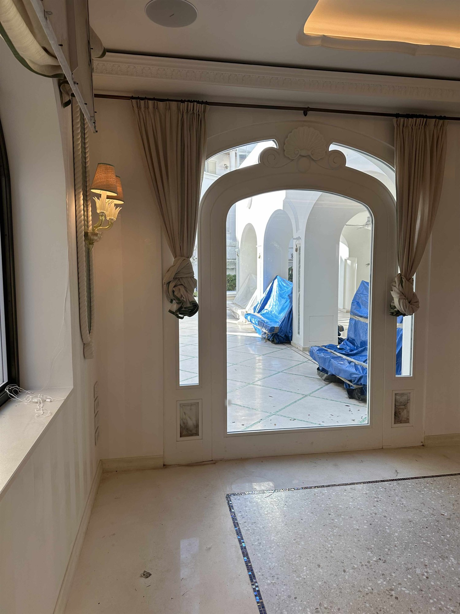
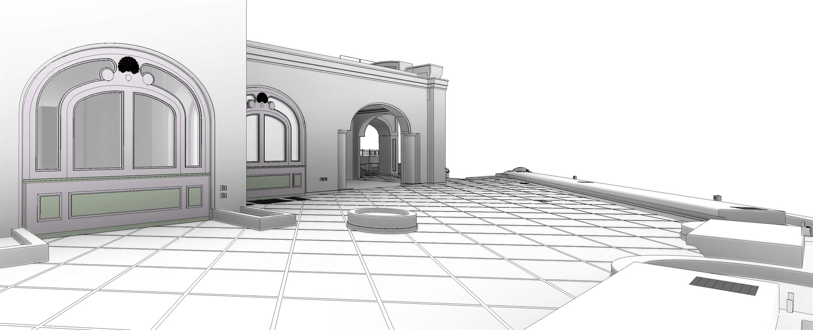
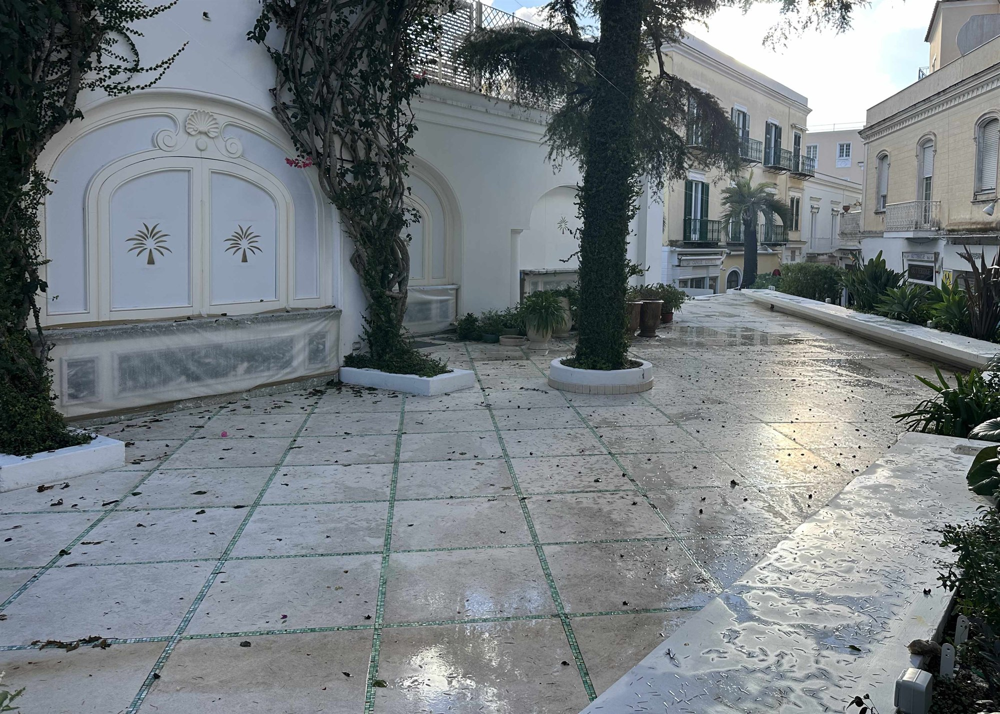